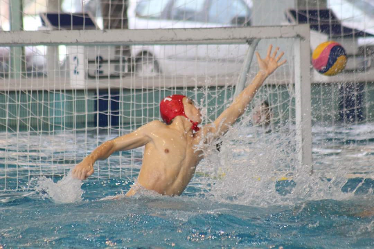

Sport
Kiskorom óta fontos szerepet játszik az életemben a sport. Legfőképpen a csapatsportokat szeretem. Sok különböző csapatsportot kipróbáltam mire végül a vízilabdában találtam meg a legnagyobb élvezetet.
Nyíregyházán ismerkedtem meg ezzel a sporttal. Itt tanultam meg a sportág alapjait és itt indultam el a kapusposzt irányába. Később Egerbe folytattam a sportpályafutásomat majd az utánpótlás bajnokság utolsó két évét Debrecenben töltöttem.
Jelenleg Budapesten folytatom ezt a sportot.